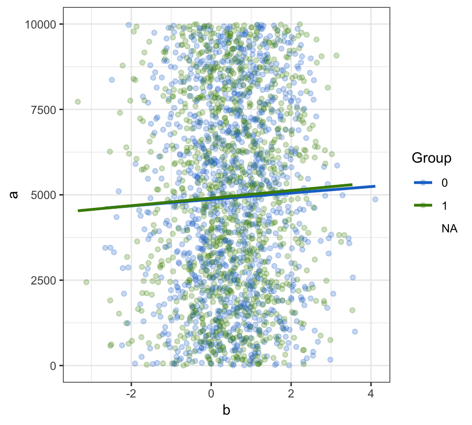

Table1.RmdThis vignette demonstrates the main function of the furniture package–table1(). This vignette is current as of furniture v 1.7.2.
The main parts of the table1() are below:
It contains several useful features for summarizing your data:
medians option, you can obtain the median and the first quartile/third quantile.knitr::kable).output, format_output, simple and condense.export = "file_name".To illustrate, we’ll walk through the main arguments with an example on some ficticious data.
set.seed(84332)
## Create Ficticious Data containing several types of variables
df <- data.frame(a = sample(1:10000, 10000, replace = TRUE),
b = runif(10000) + rnorm(10000),
c = factor(sample(c(1,2,3,4,NA), 10000, replace=TRUE)),
d = factor(sample(c(0,1,NA), 10000, replace=TRUE)),
e = trunc(rnorm(10000, 20, 5)),
f = factor(sample(c(0,1,NA), 10000, replace=TRUE)))We will use df to show these main features of table1.
For table1, the ellipses (the ...), are the variables to be summarized that are found in your data. Here, we have a through e in df.
##
## ────────────────────────
## Mean/Count (SD/%)
## n = 5272
## a
## 4968.6 (2881.6)
## b
## 0.5 (1.0)
## c
## 1 1304 (24.7%)
## 2 1329 (25.2%)
## 3 1267 (24%)
## 4 1372 (26%)
## d
## 0 2625 (49.8%)
## 1 2647 (50.2%)
## e
## 19.5 (5.0)
## ────────────────────────To get means/count and SD’s/percentages by a stratifying variable, simply use the splitby argument. The splitby can be a quoted variable (e.g., "df") or can be a one-sided formula as shown below (e.g., ~d).
##
## ──────────────────────────────────────
## d
## 0 1
## n = 2625 n = 2647
## a
## 4972.7 (2862.7) 4964.4 (2900.7)
## b
## 0.5 (1.0) 0.5 (1.0)
## c
## 1 665 (25.3%) 639 (24.1%)
## 2 652 (24.8%) 677 (25.6%)
## 3 645 (24.6%) 622 (23.5%)
## 4 663 (25.3%) 709 (26.8%)
## ──────────────────────────────────────You can get percentages by rows instead of by columns (i.e., groups) by using the row_wise = TRUE option.
##
## ──────────────────────────────────────
## d
## 0 1
## n = 2625 n = 2647
## a
## 4972.7 (2862.7) 4964.4 (2900.7)
## b
## 0.5 (1.0) 0.5 (1.0)
## c
## 1 665 (51%) 639 (49%)
## 2 652 (49.1%) 677 (50.9%)
## 3 645 (50.9%) 622 (49.1%)
## 4 663 (48.3%) 709 (51.7%)
## ──────────────────────────────────────It is easy to test for bivariate relationships, as in common in many Table 1’s, using test = TRUE.
##
## ──────────────────────────────────────────────
## d
## 0 1 P-Value
## n = 2625 n = 2647
## a 0.916
## 4972.7 (2862.7) 4964.4 (2900.7)
## b 0.248
## 0.5 (1.0) 0.5 (1.0)
## c 0.414
## 1 665 (25.3%) 639 (24.1%)
## 2 652 (24.8%) 677 (25.6%)
## 3 645 (24.6%) 622 (23.5%)
## 4 663 (25.3%) 709 (26.8%)
## ──────────────────────────────────────────────By default, only the p-values are shown but other options exist such as stars or including the test statistics with the p-values using the format_output argument.
The table can be simplified by just producing percentages for categorical variables. Further, it can be condensed by providing only a reference group’s percentages for binary variables and the means and SD’s are provided on the same line as the variable name.
##
## ──────────────────────────────────────────────
## d
## 0 1 P-Value
## n = 1757 n = 1767
## f: 1 50% 51.1% 0.545
## a 4925.5 (2873.3) 5008.8 (2919.9) 0.393
## b 0.5 (1.0) 0.5 (1.0) 0.173
## c 0.786
## 1 25.7% 24.7%
## 2 24% 24.2%
## 3 24.3% 23.7%
## 4 26.1% 27.4%
## ──────────────────────────────────────────────If the medians and the interquartile range is desired instead of means and SD’s, simply use the second argument:
table1(df,
f, a, b, c,
splitby = ~d,
test = TRUE,
type = c("simple", "condensed"),
second = c("a", "b"))##
## ──────────────────────────────────────────────
## d
## 0 1 P-Value
## n = 1757 n = 1767
## f: 1 50% 51.1% 0.545
## a 4931.0 [4937.0] 5107.0 [5109.5] 0.393
## b 0.5 [1.4] 0.5 [1.3] 0.173
## c 0.786
## 1 25.7% 24.7%
## 2 24% 24.2%
## 3 24.3% 23.7%
## 4 26.1% 27.4%
## ──────────────────────────────────────────────Several output types exist for the table (all of the knitr::kable options) including html as shown below. Others include:
| 0 | 1 | P-Value | |
|---|---|---|---|
| n = 2625 | n = 2647 | ||
| a | 0.916 | ||
| 4972.7 (2862.7) | 4964.4 (2900.7) | ||
| b | 0.248 | ||
| 0.5 (1.0) | 0.5 (1.0) | ||
| c | 0.414 | ||
| 1 | 665 (25.3%) | 639 (24.1%) | |
| 2 | 652 (24.8%) | 677 (25.6%) | |
| 3 | 645 (24.6%) | 622 (23.5%) | |
| 4 | 663 (25.3%) | 709 (26.8%) |
For some papers you may want to format the numbers by inserting a comma in as a placeholder in big numbers (e.g., 30,000 vs. 30000). You can do this by using format_number = TRUE.
##
## ──────────────────────────────────────────────────
## d
## 0 1 P-Value
## n = 2625 n = 2647
## a 0.916
## 4,972.7 (2,862.7) 4,964.4 (2,900.7)
## b 0.248
## 0.5 (1.0) 0.5 (1.0)
## c 0.414
## 1 665 (25.3%) 639 (24.1%)
## 2 652 (24.8%) 677 (25.6%)
## 3 645 (24.6%) 622 (23.5%)
## 4 663 (25.3%) 709 (26.8%)
## ──────────────────────────────────────────────────na.rm
In order to explore the missingness in the factor variables, using na.rm = FALSE does the counts and percentages of the missing values as well.
##
## ───────────────────────────────────────────────
## d
## 0 1 P-Value
## n = 3295 n = 3315
## a 0.786
## 4949.8 (2868.8) 4969.0 (2884.4)
## b 0.112
## 0.5 (1.0) 0.5 (1.0)
## c 0.414
## 1 665 (20.2%) 639 (19.3%)
## 2 652 (19.8%) 677 (20.4%)
## 3 645 (19.6%) 622 (18.8%)
## 4 663 (20.1%) 709 (21.4%)
## NA 670 (20.3%) 668 (20.2%)
## ───────────────────────────────────────────────Here we do not have any missingness but it shows up as zeros to show that there are none there.
Finally, to make it easier to implement in the tidyverse of packages, a piping option is available. This option invisibly returns the data frame that was given to the table 1 function and prints the table in console.
library(tidyverse)
df %>%
filter(f == 1) %>%
group_by(d) %>%
table1(a, b, c,
test = TRUE,
type = c("simple", "condensed")) %>%
ggplot(aes(x = b, y = a, group = d)) +
geom_point(aes(color = d), alpha =.25) +
geom_smooth(aes(color = d), method = "lm", se=FALSE) +
scale_color_manual(values = c("dodgerblue3", "chartreuse4"), name = "Group") +
theme_bw()##
## ────────────────────────
## Mean/Count (SD/%)
## n = 2709
## a 5025.6 (2912.5)
## b 0.5 (1.0)
## c
## 1 24.7%
## 2 25.2%
## 3 23.8%
## 4 26.3%
## ────────────────────────
You can also adjust the variable names from within the function as so:
##
## ──────────────────────────────────────────────
## d
## 0 1 P-Value
## n = 2625 n = 2647
## Avar 0.916
## 4972.7 (2862.7) 4964.4 (2900.7)
## Bvar 0.248
## 0.5 (1.0) 0.5 (1.0)
## Cvar 0.414
## 1 665 (25.3%) 639 (24.1%)
## 2 652 (24.8%) 677 (25.6%)
## 3 645 (24.6%) 622 (23.5%)
## 4 663 (25.3%) 709 (26.8%)
## ──────────────────────────────────────────────This is particularly useful when you adjust a variable within the function:
##
## ──────────────────────────────────────
## d
## 0 1 P-Value
## n = 2625 n = 2647
## A 1
## 0 0 (0%) 1 (0%)
## 1 2625 (100%) 2646 (100%)
## b 0.248
## 0.5 (1.0) 0.5 (1.0)
## c 0.414
## 1 665 (25.3%) 639 (24.1%)
## 2 652 (24.8%) 677 (25.6%)
## 3 645 (24.6%) 622 (23.5%)
## 4 663 (25.3%) 709 (26.8%)
## ──────────────────────────────────────Here we changed a to a factor within the function. In order for the name to look better, we can assign a new name, otherwise it would be named something like factor.ifelse.a....
For more complex naming (e.g., using spacing, brackets, or other values not allowed as name in a data.frame), use the var_names argument.
table1(df,
factor(ifelse(a > 1, 1, 0)), b, c,
splitby = ~d,
test = TRUE,
var_names = c("A New Variable", "B Variable", "C Variable"))##
## ────────────────────────────────────────────────
## d
## 0 1 P-Value
## n = 2625 n = 2647
## A New Variable 1
## 0 0 (0%) 1 (0%)
## 1 2625 (100%) 2646 (100%)
## B Variable 0.248
## 0.5 (1.0) 0.5 (1.0)
## C Variable 0.414
## 1 665 (25.3%) 639 (24.1%)
## 2 652 (24.8%) 677 (25.6%)
## 3 645 (24.6%) 622 (23.5%)
## 4 663 (25.3%) 709 (26.8%)
## ────────────────────────────────────────────────As a final note, the "table1" object can be coerced to a data.frame very easily:
## Table1.. Table1.0 Table1.1 Table1.P.Value
## 1 n = 2625 n = 2647
## 2 a 0.916
## 3 4972.7 (2862.7) 4964.4 (2900.7)
## 4 b 0.248
## 5 0.5 (1.0) 0.5 (1.0)
## 6 c 0.414
## 7 1 665 (25.3%) 639 (24.1%)
## 8 2 652 (24.8%) 677 (25.6%)
## 9 3 645 (24.6%) 622 (23.5%)
## 10 4 663 (25.3%) 709 (26.8%)